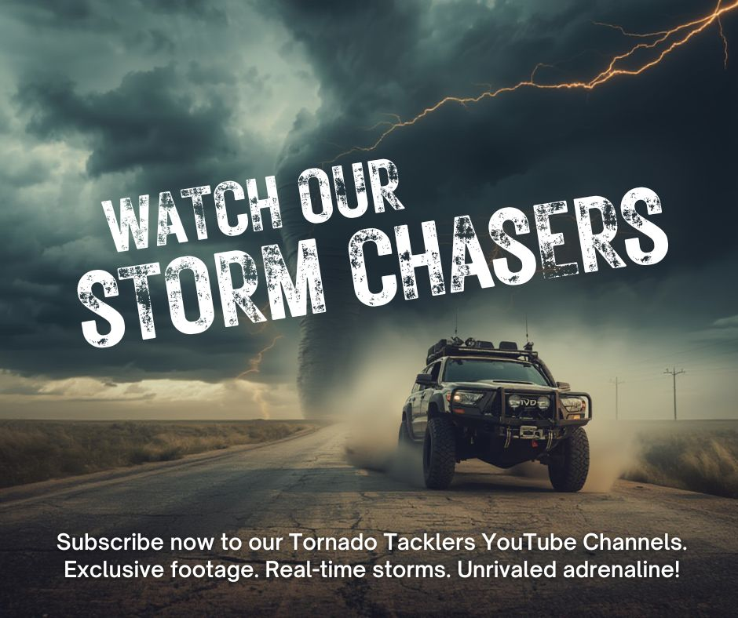
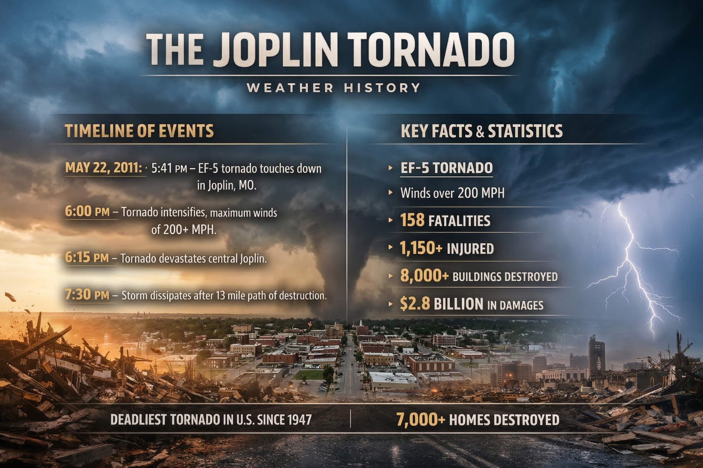
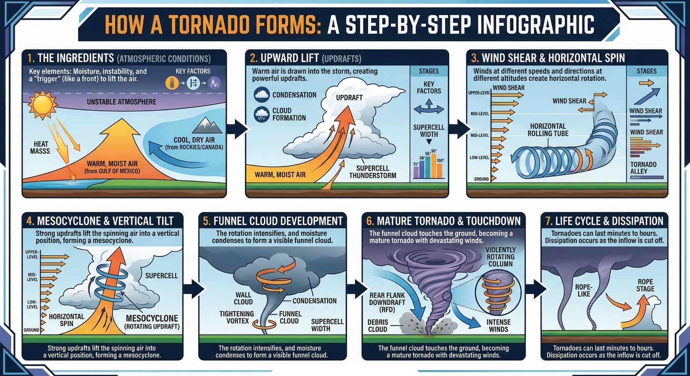

Field Photography · Severe Weather Documentation
My
Gallery
Photos captured in the field and content created for Tornado Tacklers. Click any image to view full size.
Content Creation
Design
Work
Graphic design work created for Tornado Tacklers social media campaigns — built in Canva, ChatGPT, Gemini and shared across Facebook and our other platforms, reaching hundreds of thousands of followers.

Hurricane Helene Relief Drive
Canva · Tornado Tacklers · 2024

Meteorological Spring
Canva · Facebook Post · March 2026

YouTube Thumbnail
AI-Assisted · March 2026

Storm Chaser Recruitment
AI on Canva · 2025

The Joplin Tornado
AI-Made Infographic · 2026

How a Tornado Forms
AI-Made with Gemini · 2026
Storm Pics
Field
Photography

Mesocyclone · East Central Iowa
May 2022

Storm Building · Minnesota Cornfields
July 2022

First Tornado · Orange City, IA
August 7, 2023

Wall Cloud · Missouri
May 2023

Wall Cloud · Minnesota Farmland
June 2023

Cumulonimbus · Iowa
July 2023

Supercell · Coburn, ND
June 20, 2025

Tornado · Spiritwood, ND
Daytime · June 20, 2025

Tornado · Spiritwood, ND
Daytime · June 20, 2025

Tornado · Fort Ransom, ND
Nighttime · June 20, 2025

Tornado · Fort Ransom, ND
Nighttime · June 20, 2025

Shelf Cloud · Eastern Nebraska
July 2025
Landscape & Wildlife
Beyond
The Storm
Photography from beyond the chase — landscapes, nature, and wildlife captured across Minnesota and beyond.

Wolfcreek Waterfall · Minnesota
© Ginger Murray

Mountain Goats · Glacier National Park
July 2020 · © Ginger Murray

Mountain Peak · Glacier National Park
July 2020 · © Ginger Murray

Frosty Mountain · Glacier National Park
July 2020 · © Ginger Murray

Friendly Marmot · Glacier National Park
July 2020 · © Ginger Murray

Badlands National Park
2022 · © Ginger Murray

Mountain Through Forest · Glacier NP
July 2020 · © Ginger Murray

Twin Rams · Glacier National Park
July 2020 · © Ginger Murray

Mountain Sunset · Glacier National Park
July 2020 · © Ginger Murray
More Coming
Gallery Growing
Each Chase Season
This gallery will be updated throughout the 2026 chase season. Follow along on social media for real-time field coverage.